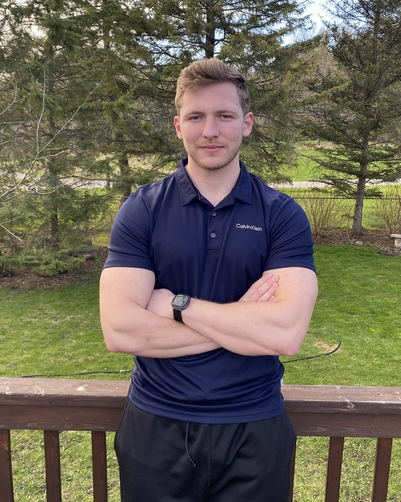

Adam Nunvar
- Kinesiology student
- canfitpro Personal Trainer
- Founder of Mount Wellness
I am a lifelong fitness enthusiast who loves sharing what I know to help others reach their goals.
I chose kinesiology because of my love of sport and fitness, and I enjoy applying what I learn in the classroom to real life. I have worked as a personal trainer for over two years, and I currently run Mount Wellness, a small business that provides functional fitness classes for seniors in Mount Albert. I plan to become a Registered Kinesiologist and use that experience to grow my business and expand into other demographics, such as one-on-one training for busy professionals in my community.
This portfolio brings together my work experience, academic achievements, placement projects, and professional development. Whether you are a potential client or a business looking to collaborate, my goal is to show you who I am and why I would be a skilled and trustworthy professional to work with.
The record so far
- 93.71%
- Cumulative average after three years of kinesiology
- 22
- People registered with Mount Wellness since it launched in May 2026
- 2+ years
- Training clients one-on-one and in groups
- 11
- Courses completed with a grade of 96% or higher
Since I was just starting out in the gym, it was great to have someone who could look at what I wanted to accomplish and provide a clear and helpful path in how to achieve and stay consistent with those goals.
Liam D., personal training client